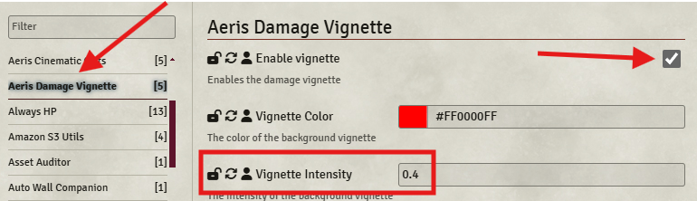
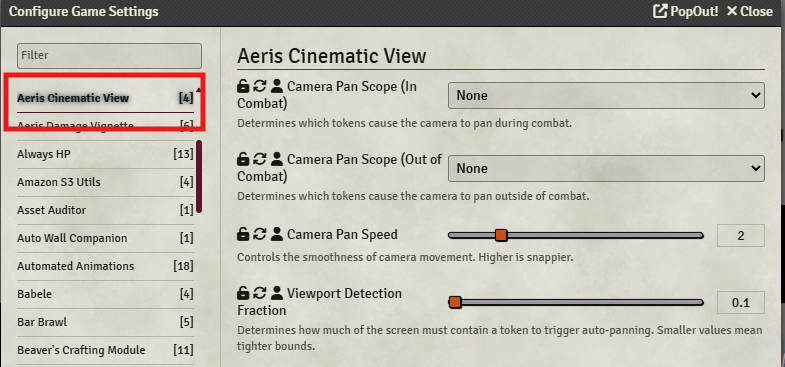

Patch 2.7 – Session 16
Patch 2.7 – Session 16
 Système
Système
 Le client permettant de se connecter à Foundry a reçu plusieurs mises à jour majeures. Vous pouvez le télécharger ici.Il peut désormais se mettre à jour automatiquement, sans nécessiter de téléchargement manuel via GitHub.Une intégration Discord a été ajoutée. Pour l’activer, cochez l’option Enable Discord Rich Presence à la fois dans les paramètres du client et dans ceux de Foundry. N’hésitez pas à me demander de l’aide si besoin.L’apparence du client est désormais entièrement personnalisable.
Le client permettant de se connecter à Foundry a reçu plusieurs mises à jour majeures. Vous pouvez le télécharger ici.Il peut désormais se mettre à jour automatiquement, sans nécessiter de téléchargement manuel via GitHub.Une intégration Discord a été ajoutée. Pour l’activer, cochez l’option Enable Discord Rich Presence à la fois dans les paramètres du client et dans ceux de Foundry. N’hésitez pas à me demander de l’aide si besoin.L’apparence du client est désormais entièrement personnalisable.- Foundry VTT a été mis à jour (12.331 → 12.343).
- Le degré de difficulté du jet de sauvegarde des grenades basiques a été augmenté (12 → 14).
- L'affliction Aveuglé ne masque plus complètement le champ de vision du joueur.Ce changement permet aux joueurs de continuer à utiliser certaines aptitudes ne nécessitant pas la vue (comme les Ordres du Souverain) ou d’attaquer à l’aveugle s’ils le souhaitent. L’ancienne version bloquait totalement la vue et donc la quasi-totalité des actions, rendant l’état extrêmement contraignant. Il faudra toutefois veiller à limiter les dérives de métagaming induites par ce changement.
- Les jets de sauvegarde pour se libérer de certaines afflictions sont désormais automatiquement déclenchés en début de tour.Le jet en lui-même ainsi que l'ajout de bonus éventuels restent à déclenchement manuel par le joueur concerné, comme tous les autres jets de sauvegarde.
- Les Tokens des joueurs utilisent désormais le système de Tokens Dynamiques de Foundry VTT.
- Une animation unique se déclenche désormais lors d’un coup critique.
- Un effet de vignette est désormais dynamiquement appliqué en fonction des dégâts subis par un personnage.Ce filtre est configurable (ou désactivable) dans les paramètres de Foundry, rubrique Aeris Damage Vignette. (Cliquez sur l'image pour l'agrandir)
- Des effets de caméra ont été ajoutés pour les déplacements en combat ainsi que lors de l’activation d’attaques ou d’aptitudes.Ils sont configurables (ou désactivable) dans les paramètres de Foundry, rubrique Aeris Cinematic View. (Cliquez sur l'image pour l'agrandir)
- L'interface "Baldur's Gate 3" a été mise à jour.La quantité des objets consommables est désormais visible, en plus de leur nombre d’utilisations.Lorsqu’une action bonus ou une réaction est utilisée, les autres aptitudes du même type sont grisées pour signaler leur indisponibilité. Il reste toutefois possible de les forcer manuellement.
- Les attaques d’opportunité automatiques utilisent désormais l'action dédiée plutôt que l’arme équipée.Ce changement est surtout technique : il facilite la gestion des PA, et ne devrait normalement pas modifier l’expérience côté joueur.
- Le score de caractéristique principal d'un personnage joueur, pouvant être augmenté jusqu'à 22, est désormais affiché en vert sur sa fiche de personnage.Le score de caractéristique intangible des Thérians reste affiché en priorité.
- Les musiques sont désormais hébergées sur un stockage en ligne (S3), ce qui réduit la taille du dossier local et soulage ma connexion lors du streaming.Le temps de chargement peut donc varier selon votre connexion.
- Un système de bouclage dynamique a été mis en place pour les musiques.Cela élimine les coupures sonores en fin de piste (auparavant bouclées manuellement sur 30 minutes).
- L’interface des marchands affiche désormais la rareté des objets.
- Le son du changement de tour dépend désormais du volume de l’interface, et non plus de celui de l’environnement.
- Il est à nouveau possible de cibler une créature depuis le traqueur de combat (bouton ).
- Divers ajustements ont été effectués en préparation de la mise à jour vers Foundry v13.
Races
 Vaisseau
Vaisseau
- L'aptitude Inimitié des Ombres a été renommée Inimitié contre les Ombres.
Classes
 Souverain
Souverain
- L'aptitude Ordre de protection cible désormais un nombre d’alliés volontaires égal ou inférieur au modificateur de Charisme du Souverain, au lieu d’un nombre illimité.
 Lansquenet
Lansquenet
- L'aptitude Double frappe utilise désormais correctement 1d8 pour déterminer la Précision, à la place d’1d20.Le bug "décalant" la valeur du dé de Double frappe n'a pas pu être reproduit. Il pourrait être lié à la charge serveur lorsque tous les joueurs sont connectés. Il faudra y être attentif lors des prochaines sessions.
 Shogun
Shogun
- L'aptitude Hirondelles jumelles applique désormais correctement l'effet de Frappe éclair.
- L'animation de Parade a été modifiée.
Codex
- L'historique d'Ithil a été modifié ("Émissaire des défunts" → "Pisteuse des silences").
- Sa description dans l’index des personnages a également été actualisée.
- Les thèmes musicaux des combats contre un F.O.E. ont été ajoutés.
- Une nouvelle musique a été ajoutée à la catégorie Évènements.
- La statistique de Défense s’affiche désormais sur les fiches des personnages joueurs.
Problèmes résolus
- (Résolu lors de la session 15) L’anneau d’explorateur confère correctement un bonus de +1 en Perception.
- (Résolu lors de la session 15) Les fusils consomment bien une charge à chaque utilisation.
- La réaction de l'aptitude Se tenir prêt n'est plus proposée au joueur dés que le personnage est pris pour cible.
- Les réactions Parade et Charge téméraire fonctionnent de nouveau comme prévu.
- Le bug qui empêchait certaines musiques de jouer pour certains joueurs devrait être résolu, d'une part à cause de l'hébergement externe de celles-ci, et d'autre part à cause d'un paramètre qui posait problème sur le nom de domaine, qui a été depuis retiré.
Problèmes connus
- Certaines emotes ne fonctionnent plus correctement sur les nouveaux Tokens des joueurs.
- Le minuteur des musiques respecte bien le bouclage dynamique lors de la première lecture, mais ne le réapplique pas ensuite.
MJ
- L'interface BG3 est désormais utilisable par les MJ lorsqu'aucun ou plusieurs Tokens sont sélectionnés.
- Il est à nouveau possible de forcer le tour d'une créature depuis le traqueur de combat (bouton ).